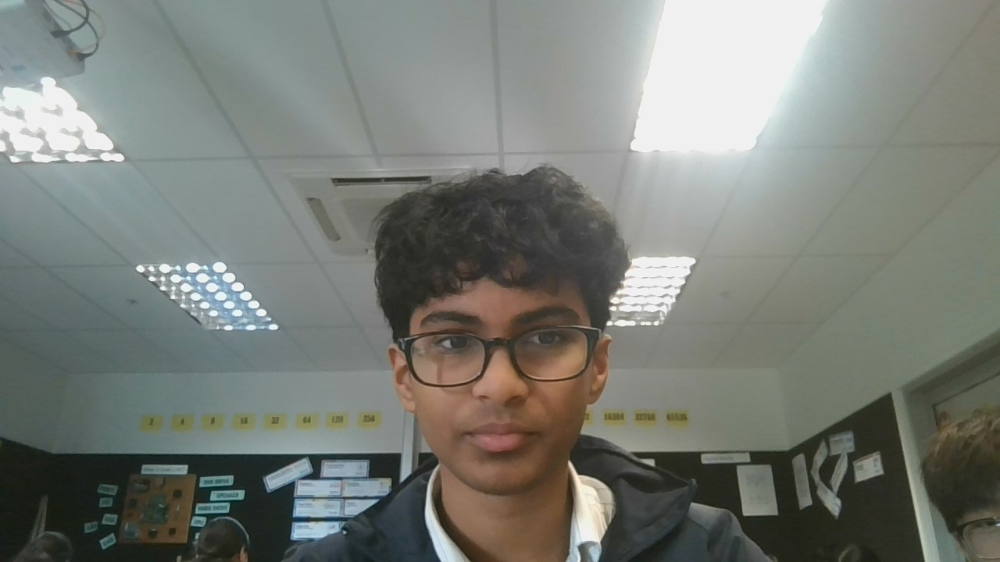

Home
In my free time, I enjoy a variety of hobbies that keep me both mentally and physically active. Coding is a passion of mine; I love the challenge of solving problems and creating projects from scratch. It’s exciting to see my ideas come to life through code. When I'm not at the computer, I love playing basketball. It’s a great way to stay fit, work as part of a team, and enjoy some friendly competition. Video games are another favorite pastime, offering a fun way to unwind and explore different worlds and strategies. I also dabble in skateboarding. Although I’m not an expert, I enjoy the thrill of learning new tricks and the freedom it offers. These hobbies balance each other out, keeping me engaged and constantly learning.
As a high school student, I pride myself on my leadership, respect, and responsibility. I have taken on various leadership roles in school clubs and group projects, always aiming to inspire and support my peers. I believe that respecting others is crucial, so I make sure to listen to different viewpoints and value everyone's input. Responsibility is something I take seriously, whether it’s completing my homework on time or helping out at home. These qualities help me stay organized, dependable, and ready to face any challenge that comes my way.
